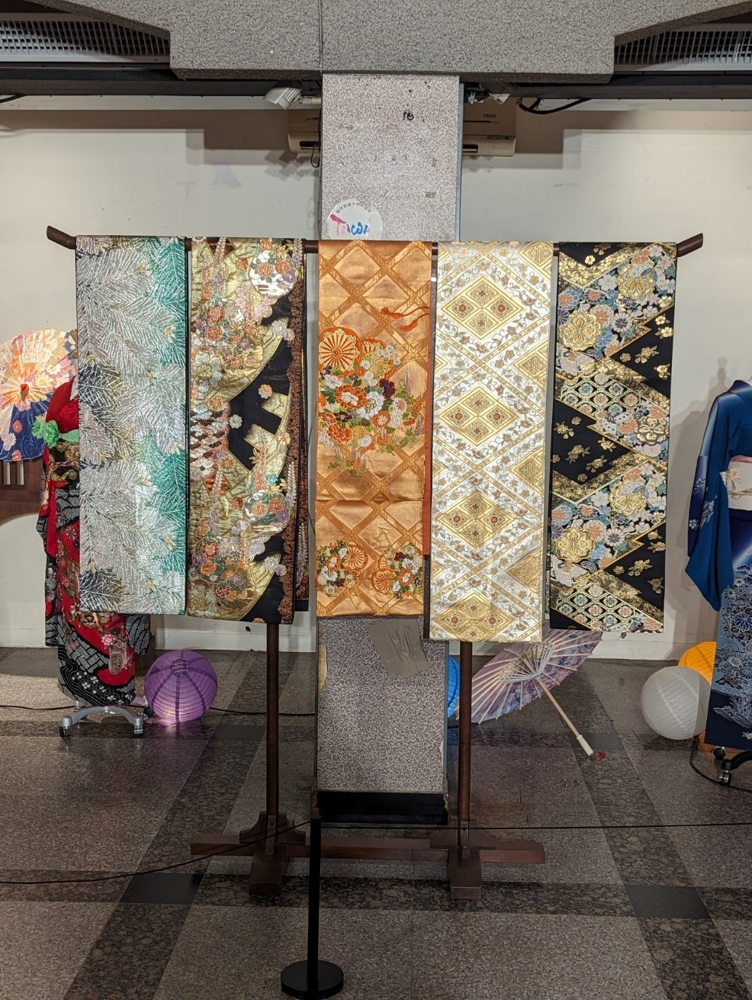
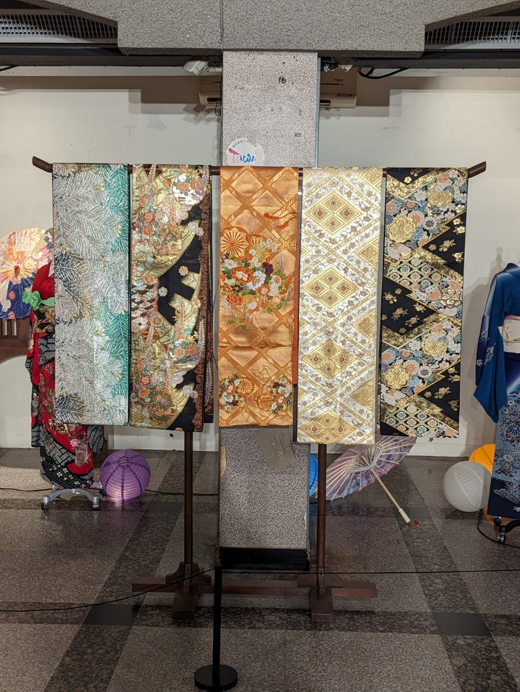

地點:
我參加10/21周六傍晚的鈴蘭通散步納涼會，這次行程逛了大墩鈴蘭通啤酒節的市集活動。
鈴蘭是一種生長於北半球溫帶地區高山的小型花卉，白色小花的外觀就像小鈴鐺。
日本大正時期盛行以花草藤蔓當作裝飾造型的新藝術風格並流傳到臺中。在1920年代於日本京都點亮第一條有鈴蘭燈的商店街所以之後就把日本各地最熱鬧的商店街叫做鈴蘭通。而台灣的鈴蘭燈要等到台灣電化株式會社於1919年10月成立後才陸續出現。
臺中的鈴蘭通納涼會活動源自於日治時期的中部歷經地震後，在地店家為振興經濟所發起的變裝遊行，搭配夏季傳統消暑娛樂的夜間活動「納涼會」。
同時透過各種日式節慶活動進行文化體驗並帶來街區的觀光人潮與收益。
 
